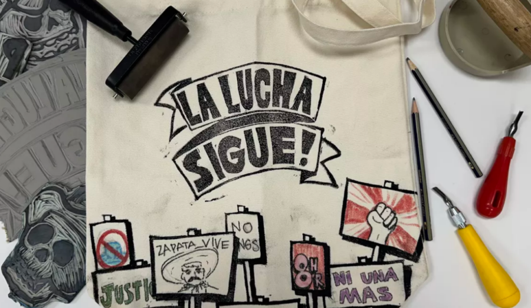

Late Wednesdays: May
Join us for Late Wednesdays on May 6th, when we’ll be open until 8:00 pm. Enjoy the Museum after hours with extended access to the galleries and gift shop. Stroll through current exhibitions, pick up a unique gift, and take in the art in a more relaxed setting.
In honor of International Workers’ Day, join us for a hands-on workshop exploring workers’ rights through the lens of artist Carlos Cortez and his works that are part of the Museum’s Permanent Collection. Inspired by Chicago’s rich history of activism and a cross-border tradition of printmaking, you’ll design and carve your own printing stamp to create a bold message on a tote bag. Rooted in the legacy of artists who have used print to inform and mobilize communities, this workshop invites you to connect art, history, and social impact in a creative and meaningful way.
Start Time: 6:30 pm
Length: 1 hour, 30 minutes
Location: Art Studio
Fee: $10 per person
Register for the workshop here.